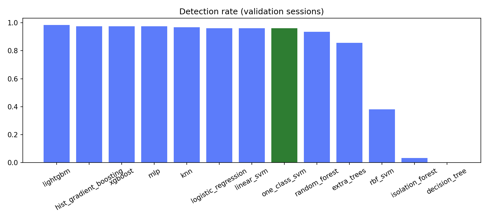
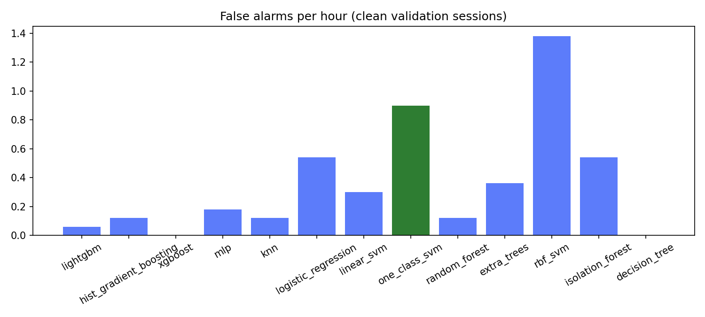
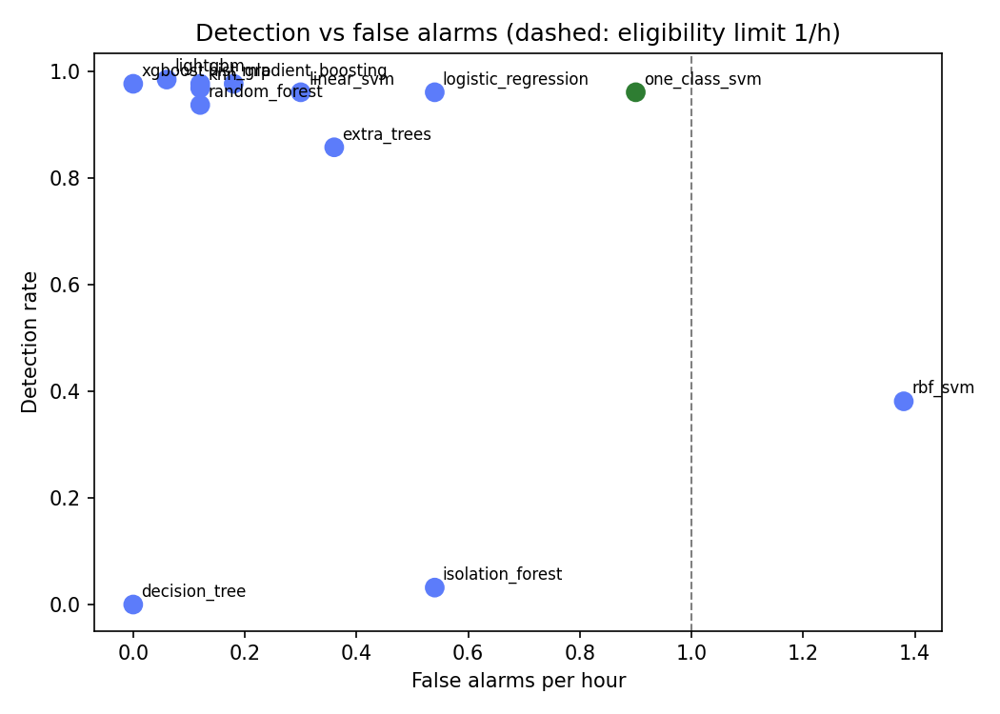

Winner by the rule in MODEL_SELECTION.md section 6: one_class_svm. Simulation only; not a bench or flight result.
| data | datasets/sim_fa2 |
| sessions_train | 2210 |
| sessions_calibration | 884 |
| sessions_validation | 1326 |
| threshold_percentile | 99.900 |
| persistence_k | 10 |
| Model | DR (T1) | FA/h (T2) | DR no C/N0, DOP (T3) | DR weak <1 dB (T4) | DR unseen type (T5) | Delay median s (T6) | ms/decision (T7) | DR mean, 5 seeds (T8) | DR std (T8) | FA/h mean (T8) | FA/h std (T8) | Eligible |
|---|---|---|---|---|---|---|---|---|---|---|---|---|
| lightgbm | 0.984 | 0.060 | 0.865 | 1.000 | 0.968 | 1.445 | 0.013 | 0.975 | 0.015 | 0.036 | 0.029 | yes |
| hist_gradient_boosting | 0.976 | 0.120 | 0.881 | 0.875 | 0.921 | 1.564 | 0.004 | 0.968 | 0.007 | 0.048 | 0.045 | yes |
| xgboost | 0.976 | 0.000 | 0.905 | 1.000 | 0.960 | 1.573 | 0.002 | 0.975 | 0.003 | 0.060 | 0.066 | yes |
| mlp | 0.976 | 0.180 | 0.952 | 1.000 | 0.952 | 1.302 | 0.002 | 0.976 | 0.005 | 0.204 | 0.172 | yes |
| knn | 0.968 | 0.120 | 0.913 | 1.000 | 0.921 | 1.669 | 0.027 | 0.956 | 0.013 | 0.120 | 0.186 | yes |
| logistic_regression | 0.960 | 0.540 | 0.905 | 1.000 | 0.968 | 1.234 | 0.001 | 0.957 | 0.008 | 0.288 | 0.191 | yes |
| linear_svm | 0.960 | 0.300 | 0.913 | 0.875 | 0.968 | 1.320 | 0.000 | 0.963 | 0.004 | 0.204 | 0.097 | yes |
| one_class_svm | 0.960 | 0.900 | 0.921 | 1.000 | 0.960 | 0.992 | 0.041 | 0.962 | 0.006 | 0.936 | 0.124 | yes |
| random_forest | 0.937 | 0.120 | 0.841 | 0.625 | 0.881 | 2.213 | 0.042 | 0.929 | 0.021 | 0.252 | 0.209 | yes |
| extra_trees | 0.857 | 0.360 | 0.794 | 0.125 | 0.849 | 2.149 | 0.042 | 0.860 | 0.006 | 0.324 | 0.140 | yes |
| rbf_svm | 0.381 | 1.380 | 0.952 | 0.375 | 0.357 | 5.288 | 0.065 | 0.383 | 0.011 | 0.852 | 0.467 | no |
| isolation_forest | 0.032 | 0.540 | 0.492 | 0.000 | 0.032 | 1.506 | 0.013 | 0.071 | 0.024 | 0.612 | 0.163 | yes |
| decision_tree | 0.000 | 0.000 | 0.937 | 0.000 | 0.246 | n/a | 0.000 | 0.000 | 0.000 | 0.000 | 0.000 | yes |


